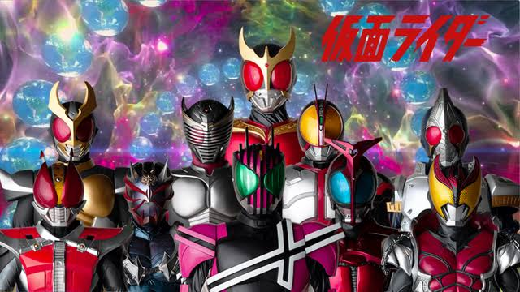
TerminadaHeisei Fase I
2000-2009
De Kuuga a Decade.
平成 · Heisei
Heisei Fase II cubre 2009-2019, desde W hasta Zi-O. Esta página reúne las diez series y servirá de índice para las fichas detalladas.
平成 · Heisei
La biblioteca se organiza por era. La segunda fase está abierta para catalogación; los estantes contiguos permanecen cerrados hasta que se escriban sus entradas.

Terminada2000-2009
De Kuuga a Decade.
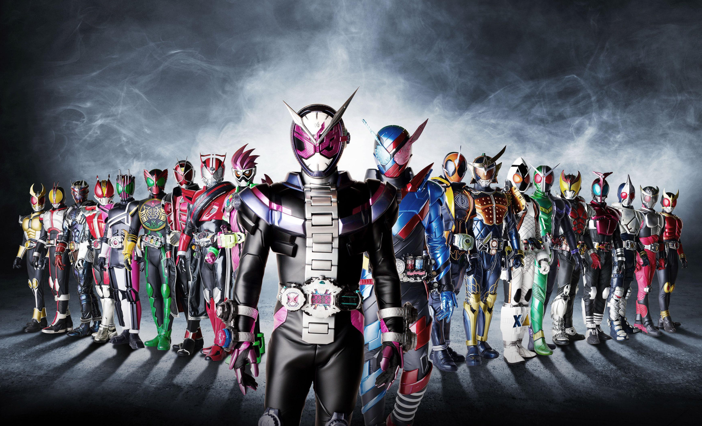
Terminada2009-2019
De W a Zi-O. Diez series.
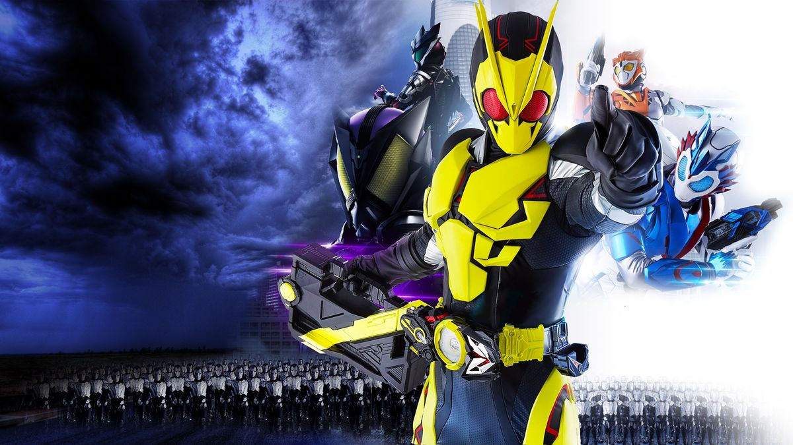
En curso2019-
De Zero-One en adelante.
平成第二期 · La línea de tiempo
Las diez series de la fase, en orden de emisión. Abre una entrada para consultar su ficha provisional; el contenido detallado se completará más adelante.
2009
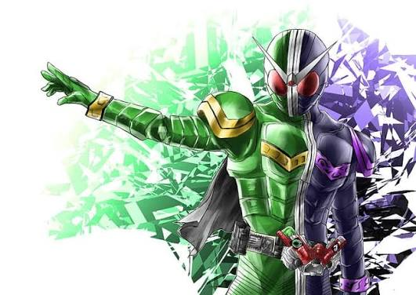
仮面ライダーW
2010
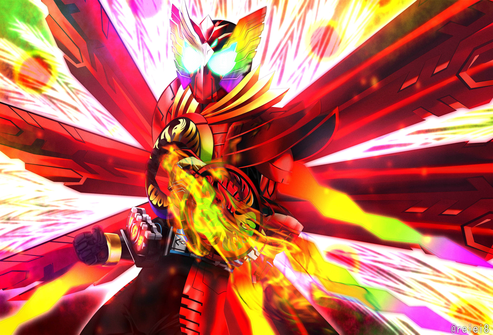
仮面ライダーオーズ
2011
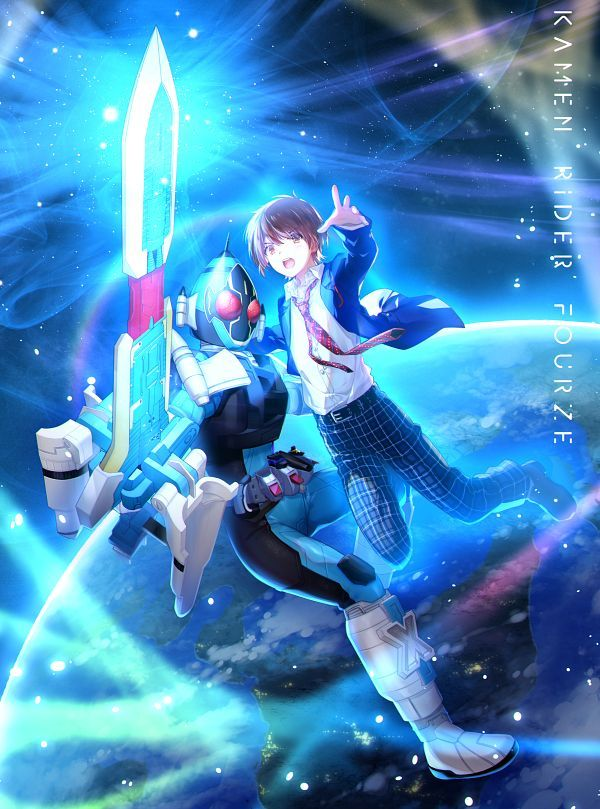
仮面ライダーフォーゼ
2012
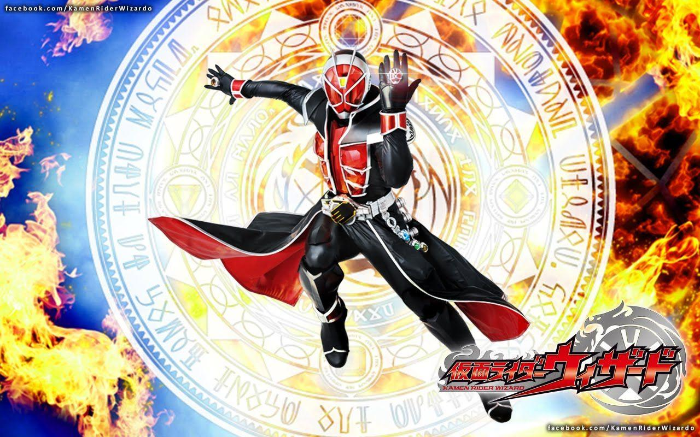
仮面ライダーウィザード
2013
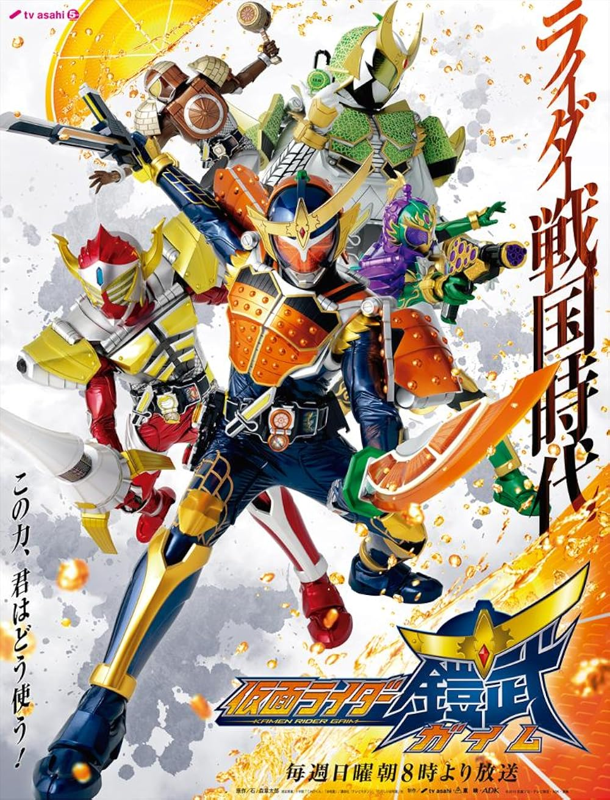
仮面ライダー鎧武
2014
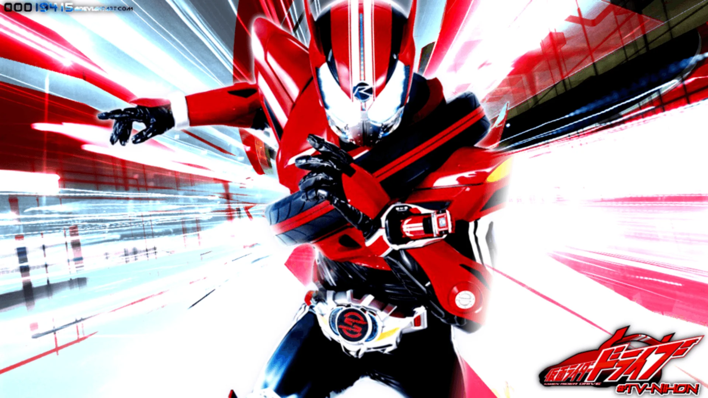
仮面ライダードライブ
2015
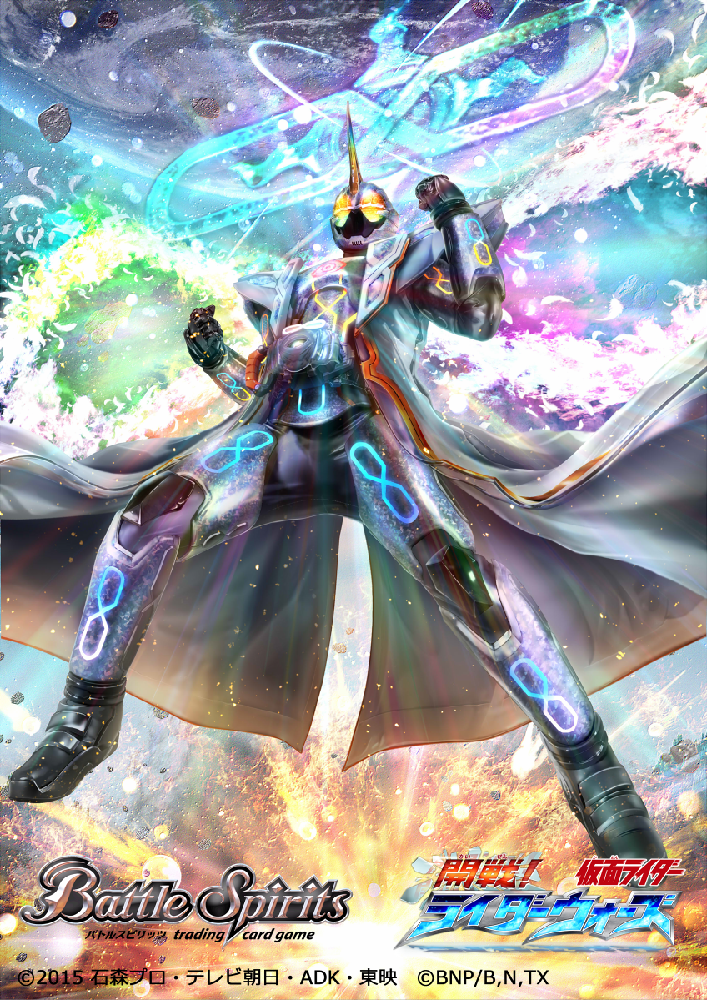
仮面ライダーゴースト
2016
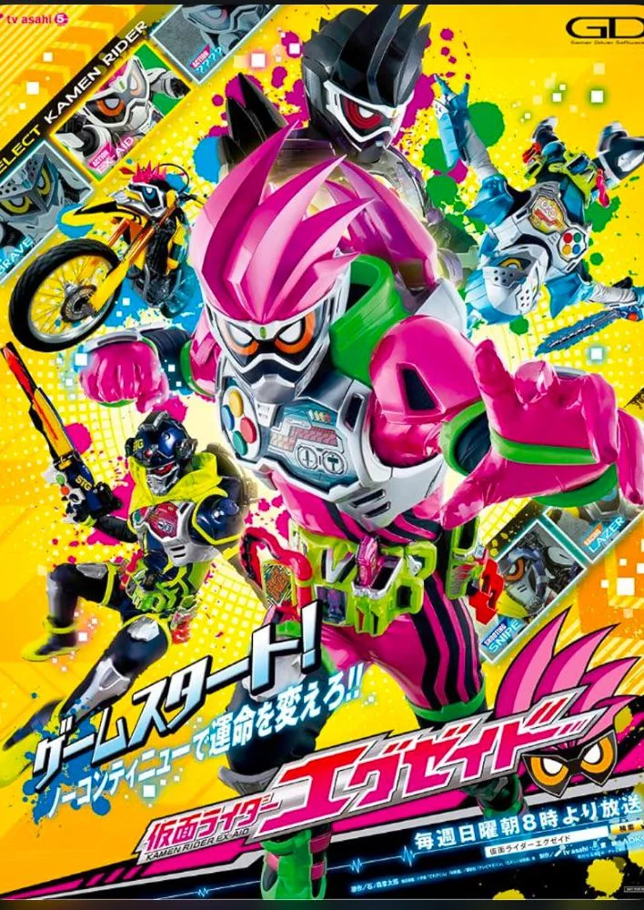
仮面ライダーエグゼイド
2017
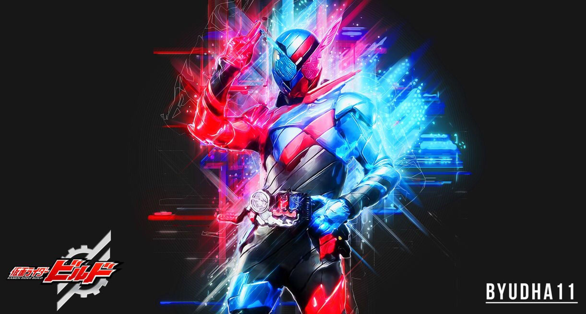
仮面ライダービルド
2018-19
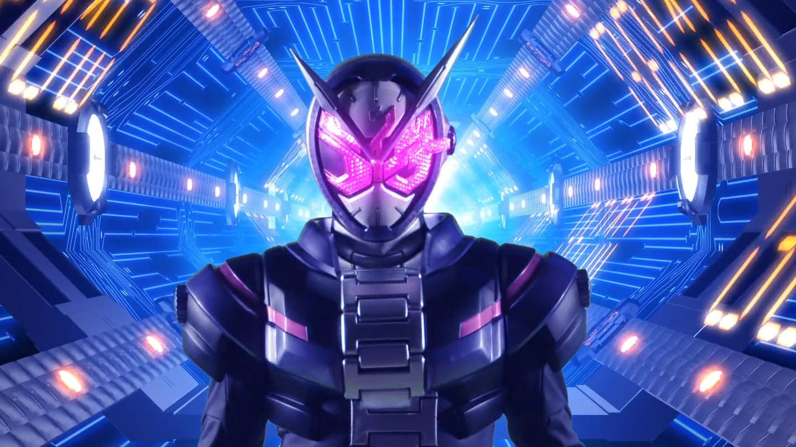
仮面ライダージオウ
平成第二期 · La colección